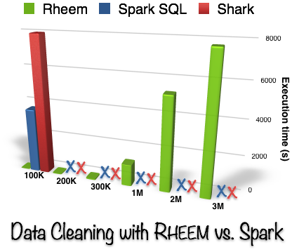
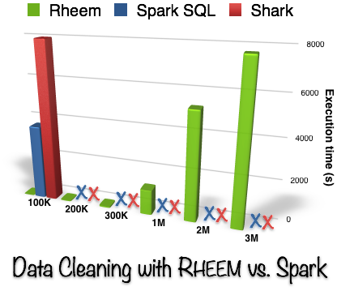

Overview
RHEEM has a three-layer data processing abstraction that sits between user applications and data processing platforms, such as Hadoop and Spark. Figure 1 depicts Rheem architecture: (i) an application layer that models all application-specific logic; (ii) a core layer that provides the intermediate rep- resentation between applications and processing platforms; and (iii) a platform layer that embraces the underlying pro- cessing platforms. Overall, the input of an application layer comprises the logical operators provided by users (or generated by a declarative query parser) and the output is a physical plan (RheemPlan). The RheemPlan is then passed to the core layer where cross-platform optimizations take place to produce an execution plan (ExecutionPlan).
Notice that, in contrast to DBMSs, RHEEM decouples physical and execution levels. This separation allows applications to express physical plans in terms of algorithmic needs only, without being tied to a particular processing platform. The salient features of Rheem are cross-platform task execution, high performance, flexibility, and ease-of-use.
Features
The salient features of Rheem are cross-platform task execution, high performance, flexibility, and ease-of-use:
-
Cross-Platform. The most salient feature of Rheem is its cross-platform optimizer. Besides deciding the best processing platform to run any incoming task, Rheem can run a single task on multiple processing platforms. Overall, it applies an extensible set of graph transformations to the RheemPlan to find alternative ExecutionPlans. Then, it compares all ExecutionPlans by using a platform-specific cost model. Cost functions can either be given or learned, and are parameterized with respect to the underlying hardware (e.g., number of computing nodes for distributed operators).
-
High-Perormance. Rheem provides a number of optimized operators and novel query optimization process that allows it to efficiently deal with big (as well as small) datasets. Furthermore, as its data processing abstraction is based on UDFs, Rheem lets applications expose semantic properties about their functions, optimization hints (e.g., numbers of iterations), constraints (e.g., physical collocation of operators), and alternative plans. The optimizer then uses those artifacts where available in a best-effort approach. The figure below clearly shows the high superiority of Rheem over its competitors for several tasks.
-
Flexibility. Rheem provides a set of physical operators, which applications use to implement their tasks, as well as a set of execution operators, which processing platform provide to run application tasks. The key aspect is that Rheem provides a flexible operator mapping structure allowing developers to add, modify, or delete mappings among physical and execution operators. As a result, developers can also add or remove physical and execution operators.
-
Ease-of-Use. Rheem exposes a simple Java API to developers whereby they can implement their tasks. Developers have to focus on the logics of their tasks rather than on low-level details specific to data processing platforms. Figure X shows the RheemPlan for a scalable gradient descent implementation: we clearly see that this tedious implementation task has is now much easier!
 
